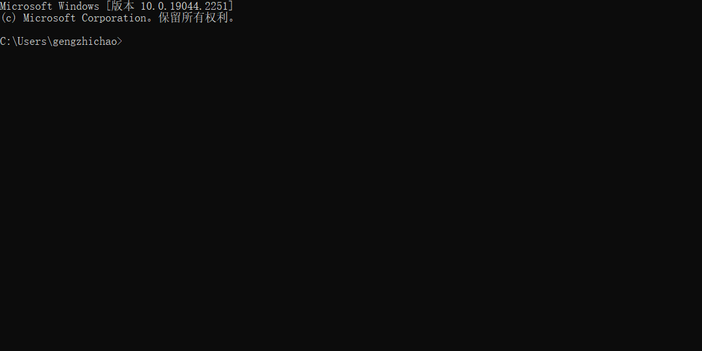
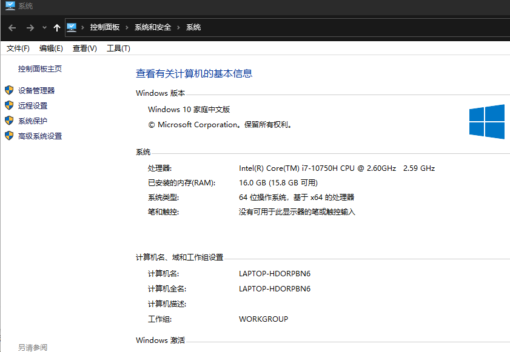
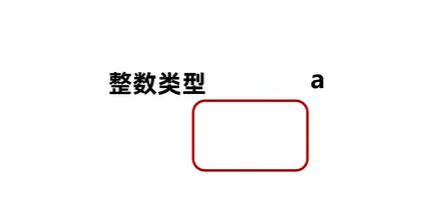

[TOC]
1.人机交互
1.1什么是cmd
在windows操作系统中，利用命令行方式去操作计算机。
我们可以命令行去操作计算机，例：打开文件，打开文件夹，创建文件夹等等。
1.2 如何打开CMD窗口
1.按下快捷键win + R，此时会出现运行窗口
2.在运行窗口输入cmd，回车。
解惑：
cmd默认操作C盘下的users文件夹下的XXX文件夹。（XXX就是计算机名）
1.3常用的cmd命令
扩展一个小点：
在很多资料中都说成是DOS命令，其实是不对的。真正的DOS命令是1981年微软和IBM出品的MS-DOS操作系统中的命令才叫做DOS命令。
而在Windows中，win98之前的操作系统是以非图形化的DOS为基础的，可以叫做DOS命令。到了2000年以后，windows逐渐的以图形化界面为主了，这个时候就不能叫DOS命令了，他只是模拟了DOS环境而已，很多的原本的DOS命令已经无法使用了，所以这个时候叫做CMD命令会更准确一些。
常见的CMD命令如下：
| 操作 | 说明 |
|---|---|
| 盘符名称: | 盘符切换。E:回车，表示切换到E盘。 |
| dir | 查看当前路径下的内容。 |
| cd 目录 | 进入单级目录。cd itheima |
| cd .. | 回退到上一级目录。 |
| cd 目录1\目录2... | 进入多级目录。cd itheima\JavaSE |
| cd \ | 回退到盘符目录。 |
| cls | 清屏。 |
| exit | 退出命令提示符窗口。 |
1.4 cmd练习
需求：利用cmd打开qq
完成步骤
1 | 1,确定自己电脑上的QQ安装在哪里 |
解惑：
在windows操作系统当中，文件名或者文件夹名是忽略大小写的。
1.5 🎇环境变量
作用：
如果我想要在CMD的任意目录下，都可以启动某一个软件，那么就可以把这个软件的路径配置到环境变量中的PATH里面。
在启动软件的时候，操作系统会先在当前路径下找，如果在当前录课没有再到环境变量的路径中去找。如果都找不到就提示无法启动。
步骤：
- 右键我的电脑，选择属性。
- 点击左侧的高级系统设置
- 选择高级，再点击下面的环境变量。
- 找系统变量里面的PATH
- 把软件的完整路径，配置到PATH当中就可以了。
- （可做可不做）就是把自己配置的路径，移动到最上面。
图解示例如下：
第一步：右键点击我的电脑并选择属性。
（如果无法出现第二步界面，可以打开我的电脑之后右键点击空白处）
第二步：点击高级系统设置。
第三步：选择高级，再点击下面的环境变量。

第四步：找系统变量里面的PATH
第五步：点击新建，把软件的完整路径，配置到PATH当中，再点击确定即可。
第六步：（可做可不做）点击上移，把当前配置的路径移动到最上面。
移动的好处：在CMD中打开软件时，会先找当前路径，再找环境变量，在环境变量中是从上往下依次查找的，如果路径放在最上面查找的速度比较快。

2. java概述
2.1 java是什么
Java是一门非常火的计算机语言。（也叫做编程语言）
2.2 下载和安装
JDK下载
针对不同的系统下载对应的版本
注意：
1.傻瓜安装，下一步即可。
2.安装路径中不要包含中午和空格。
3.所有开发工具最好安装目录统一。
不要下载JDK18，有bug，中午会乱码。
JDK安装目录
🎈bin:该路径下存放了各种工具命令。其中比较重要的有：javac和java（比较重要）。
conf:该路径下存放了相关配置文件。
include:该路径下存放了一些平台特定的头文件。
jmods:该路径下存放了各种模块。
legal:该路径下存放了各模块的授权文档。
lib:该路径下存放了工具的一些补充JAR包。
2.3 HelloWorld案例
HelloWorld案例是指在计算机屏幕上输出“HelloWorld”这行文字。各种计算机语言都习惯使用该案例作为第一个演示案例。
2.3.1 java程序开发运行流程
编写程序、编译程序、运行程序。
2.3.2 HelloWorld案例的编写
- 新建文本文档文件，修改名称为HelloWorld.java。
注意：后缀名为java的才是java文件。
- 用记事本打开HelloWorld.java文件，输写程序内容。
注意：代码要跟我编写的完全保持一致。
1 | public class HelloWorld { |
- 保存
注意：未保存的文件在左上角会有*符号标记
编译文件。编译后会产生一个class文件。
java文件：程序员自己编写的代码。
class文件：交给计算机执行的文件。
运行代码
注意：运行的是编译之后的class文件。
用到两个命令：
javac + 文件名 + 后缀名 （就是编译java文件）
java + 文件名（运行编译之后的class文件）
2.4 HelloWorld案例常见问题
2.4.1 BUG
在电脑系统或程序中，隐藏着的一些未被发现的缺陷或问题统称为bug（漏洞）。
2.4.2 BUG的解决
- 具备识别BUG的能力：多看
- 具备分析BUG的能力：多思考，多查资料
- 具备解决BUG的能力：多尝试，多总结
2.4.3 HelloWorld常见问题
1、非法字符问题。Java中的符号都是英文格式的。
2、大小写问题。Java语言对大小写敏感（区分大小写）。
3、在系统中显示文件的扩展名，避免出现HelloWorld.java.txt文件。
4、编译命令后的java文件名需要带文件后缀.java
5、运行命令后的class文件名（类名）不带文件后缀.class
…
常见错误代码1：
1 | publicclass HelloWorld{ |
问题：
public和class之间缺少一个空格。
技巧：一般来讲在单词之间的空格是不能省略的。
如果是单词和符号之间的空格是可以省略的。
常见错误代码2：
1 | public class HelloWorld{ |
问题：
system首字母必须大写。
技巧：
Java代码中，是严格区分大小写的。
所以该大写的地方一定要大写，该小写的地方一定要小写。多多练习。
常见错误代码3：
1 | public class HelloWorld{ |
问题：
第三行代码中的HelloWorld必须用双引号引起来，否则就会出现问题。
常见错误代码4：
1 | public class HelloWorld{ |
问题：
在以后代码当中，所有的标点符号必须是英文状态下的。
技巧：
可以在输入法中进行对应的设置。
2.5 环境变量
2.5.1 为什么配置环境变量
开发Java程序，需要使用JDK提供的开发工具（比如javac.exe、java.exe等命令），而这些工具在JDK的安装目录的bin目录下，如果不配置环境变量，那么这些命令只可以在bin目录下使用，而我们想要在任意目录下都能使用，所以就要配置环境变量。
注意：现在最新从官网上下载的JDK安装时会自动配置javac、java命令的路径到Path环境变量中去 ，所以javac、java可以直接使用。
2.5.2配置方式

以前下载的老版本的JDK是没有自动配置的，而且自动配置的也只包含了4个工具而已，所以我们需要删掉已经配置完毕的，再次重新配置Path环境变量。
①JAVA_HOME：告诉操作系统JDK安装在了哪个位置（未来其他技术要通过这个找JDK）

②Path：告诉操作系统JDK提供的javac(编译)、java(执行)命令安装到了哪个位置

2.5.3 win10的bug
当电脑重启之后，环境变量失效了。表示操作系统不支持自定义的环境变量。
步骤：
还是要配置JAVA_HOME给以后的相关软件去使用
我们可以把java和javac的完整路径配置到PATH当中。
E:\develop\JDK\bin
3.Notepad++
3.1 Notepad记事本
高级记事本
有行号，而且ava中的一些特殊单词会高亮显示
3.2 安装
傻瓜式安装，直接点击下一步就可以了。
对安装路径有两个小建议：
- 路径不要有中文，不要有空格，不要有一些特殊符号
- 建议最好把所有的跟开发相关的软件都放在一起，方便管理。
3.3 设置
右键点击java文件，选择edit with notepad++。
点击设置，再点击首选项。在弹出的页面当中，左侧选择新建，中间选择Java，右侧选择ANSI。


3.4 练习
利用notepad++去编写一个HelloWorld并能成功编译和运行。
4 Java语言的发展
三个版本：
- Java5.0：这是Java的第一个大版本更新。
- Java8.0：这个是目前绝大数公司正在使用的版本。因为这个版本最为稳定。
- Java15.0：这个是我们课程中学习的版本。
解惑：
我们学的跟工作中使用的版本不太一样啊。会不会影响以后工作呢？
向下兼容。新的版本只是在原有的基础上添加了一些新的功能而已。
举例：
用8版本开发的代码，用11版本能运行吗？必须可以的。
用11版本开发的代码，用8版本能运行吗？不一定。
如果11版本开发的代码，没有用到9~11的新特性，那么用8是可以运行的。
如果11版本开发的代码，用到了9~11的新特性，那么用8就无法运行了。
4.1 Java的三大平台
JavaSE、JavaME、JavaEE
4.1.1 JavaSE
是其他两个版本的基础。
4.1.2 JavaME
Java语言的小型版，用于嵌入式消费类电子设备或者小型移动设备的开发。
其中最为主要的还是小型移动设备的开发（手机）。渐渐的没落了，已经被安卓和IOS给替代了。
但是，安卓也是可以用Java来开发的。
4.1.3 JavaEE
用于Web方向的网站开发。（主要从事后台服务器的开发）
在服务器领域，Java是当之无愧的龙头老大。
4.2 Java的主要特性
面向对象
安全性
多线程
简单易用
开源
跨平台
4.3 高级语言的编译运行方式
1.编译型
2.解释型
3.混合型：半编译，半解释
编译型：


本图的细节 ： 不同平台重新编译一次，编译成三个不同的文件
解释型：


4.4 Java语言跨平台的原理 (Write Once Run Anywhere)
- 操作系统本身其实是不认识Java语言的。
- 但是针对于不同的操作系统，Java提供了不同的虚拟机。
虚拟机会把Java语言翻译成操作系统能看得懂的语言。

✨4.4 JRE和JDK

JVM（Java Virtual Machine），Java虚拟机
JRE（Java Runtime Environment），Java运行环境，包含了JVM和Java的核心类库（Java API）
JDK（Java Development Kit）称为Java开发工具，包含了JRE和开发工具
总结：我们只需安装JDK即可，它包含了java的运行环境和虚拟机。
5
5.1 注释
在程序指定位置添加的说明性文字
简单的理解，就是对代码的一种解释
方便自已和他人阅读
5.1.2 注释的分类
1.单行注释
//注释信息
2.多行注释：格式
/*注释信息*/
不能嵌套运行
1 | /* wode /* nide mingzi */ */ |

3.文档注释
/** 注释信息*/
文档注释暂时用不上。
注释不会影响代码运行结果
例子：
1 | public class knowledge { |
6 关键字
6.1 含义
被java赋予了特定含义的英文单词。
6.2 特点
1.关键字的字母全部小写。
2.常用的代码编辑器，针对关键字有特殊的颜色标记，非常直观。
6.3 常见的关键字
1. class ：用于（创建/定义）一个类是Java最基本的组成单元。
7 字面量
7.1 含义
告诉数据在程序中的书写格式 。（就是数值或符号）
7.2 字面量的分类
| 字面量类型 | 说明 | 举例 |
|---|---|---|
| 整数类型 | 不带小数的数字 | 666，-8 |
| 小数类型 | 带小数点的数字 | 13.2，-9.0 |
| 字符串类型 | 用双引号括起来的内容 | “黑哦了 hello” |
| 字符类型 | 单引号括起来，内容只有一个 | ‘h’，’我’ |
| 布尔类型 | 布尔值，表示真假 | 只有两个值：true false |
| 空类型 | 一个特殊的值，空值 | 值是：null |
注意：
1.null不能直接打印，如果我们打印null ，只能用字符串输出
2.true false 是关键字，输出直接输出 true 和 false
7.3 特殊字符的字面量
- \t 在打印的时候，把前面的字符串的长度补齐到八，或者8的整数倍，最少补一个空格最多补八个空格
1 | //\t 制表符 目的：熟悉制表符基本用法 |
- null
7.4 字面量的默认值
Java程序中，任何变量必须初始化后才能使用。
| 数据类型 | 初始值 |
|---|---|
| byte | 0 |
| short | 0 |
| int | 0 |
| long | 0L |
| char | ‘u0000’（null） |
| float | 0.0f |
| double | 0 |
| boolean | false |
| 所有引用类型 | null |
但并不是所以的未初始化的变量都会有默认值。
8.变量
8.1 变量的定义格式
==数据类型 变量名 = 数据值；==
数据类型：空间中储存的数据，加入类型限制：整数或小数……
变量名：为空间起的名字。
数据值：存在空间里面的数值。
数据类型：限定了变量当中能存储什么类型的数据。
如果要存10，那么数据类型就需要写整数类型。
如果要存10.0，那么数据类型就需要写小数类型。
变量名：其实就是这个容器的名字。
当以后想要使用变量里面的数据时，直接使用变量名就可以了。
数据值：真正存储在容器中的数据。
分号：表示语句的结束，就跟以前写作文时候的句号是一样的。
作用：方便以后使用。
等号：赋值。
8.2 变量使用方式
1.参与打印
2.参与计算
3.修改记录的值
注意事项
1.👓只能存在一个值
2.🎎变量名不允许重复定义
3.🥼一条语句可以定义多个变量
4.🎡变量在使用之前一定要进行赋值
5.🎭变量的作用范围
9 数据类型 （与变量定义公式中数据类型相关）
9.1 类型
1.基本数据类型
| 数据类型 | 关键字 | 内存占用 | 取值范围 |
|---|---|---|---|
| 整数 | byte | 1 | 负的2的7次方 ~ 2的7次方-1(-128~127) |
| short | 2 | 负的2的15次方 ~ 2的15次方-1(-32768~32767) | |
| int（默认） | 4 | 负的2的31次方 ~ 2的31次方-1 | |
| long | 8 | 负的2的63次方 ~ 2的63次方-1 | |
| 浮点数 | float | 4 | 1.401298e-45 ~ 3.402823e+38 |
| double（默认） | 8 | 4.9000000e-324 ~ 1.797693e+308 | |
| 字符 | char | 2 | 0-65535 |
| 布尔 | boolean | 1 | true，false |
说明
e+38表示是乘以10的38次方，同样，e-45表示乘以10的负45次方。
在java中整数默认是int类型，浮点数默认是double类型。
需要记住的点：
1.byte类型的取值范围：
-128 ~ 127
2.int类型的大概取值范围：
-21亿多 ~ 21亿多
3.整数类型和小数类型的取值范围大小关系：
double > float > long > int > short > byte
最为常用的数据类型选择：
在定义变量的时候，要根据实际的情况来选择不同类型的变量。
比如：人的年龄，可以选择byte类型。
比如：地球的年龄，可以选择long类型。
如果整数类型中，不太确定范围，那么默认使用int类型。
如果小数类型中，不太确定范围，那么默认使用double类型。
如果要定义字符类型的变量，那么使用char
如果要定义布尔类型的变量，那么使用boolean
注意点
- 如果要定义 一个整数类型的变量，不知道选择哪种数据类型了，默认使用int。
- 如果要定义 一个小数类型的变量，不知道选择哪种数据类型了，默认使用double。
- 如果要定义一个long类型的变量，那么在数据值的后面需要加上L后缀。（大小写都可以，建议大写。）
- 如果要定义一个float类型的变量，那么在数据值的后面需要加上F后缀。（大小写都可以）**
2.引用数据类型
10 标识符 （与变量定义式中变量名有关）
10.1 含义
就是给类，方法，变量等起的名字。
10.2 命名规则
必须要这么做，否则代码会报错。
- 必须由数字、字母、下划线_、美元符号$组成。
- 数字不能开头
- 不能是关键字
- 区分大小写的。

10.3 小驼峰命名法
适用于变量名和方法名
如果是一个单词，那么全部小写，比如：name
如果是多个单词，那么从第二个单词开始，首字母大写，比如：firstName、maxAge
10.4 大驼峰命名法
适用于类名
如果是一个单词，那么首字母大写。比如：Demo、Test。
如果是多个单词，那么每一个单词首字母都需要大写。比如：HelloWorld
不管起什么名字，都要做到见名知意。
阿里巴巴命名规范细节：
尽量不要用拼音。但是一些国际通用的拼音可视为英文单词。
正确：alibaba、hangzhou、nanjing
错误：jiage、dazhe
平时在给变量名、方法名、类名起名字的时候，不要使用下划线或美元符号。
错误：_name
正确：name
11 键盘录入
键盘录入的实际功能Java已经帮我们写好了，不需要我们自己再实现了，而Java写好的功能都放在了Scanner这个类中，所以，我们只要直接使用Scanner这个类就可以了。
使用步骤：
第一步：
导包：其实就是表示先找到Scanner这个类在哪。
第二步：
创建对象：其实就表示申明一下，我准备开始用Scanner这个类了。
第三步：
接收数据：也是真正干活的代码。nextInt 中I 大写。
代码：
1 | //导包，其实就是先找到Scanner这个类在哪 |
1. 单选题
台式机，安卓手机，iPhone手机，他们其实都是计算机，计算机干的事情就是严格的执行人的指令，但是目前的科技条件下，电脑仍然有一个很大的短板，这个短板是？
A.思考
B.计算
1 | 计算机最擅长的是运行固定的程序，就目前而言，计算机还缺少思考的能力。包括目前的人工智能，也缺少类似于人的思考过程。 |
计算机不能思考，那他是如何工作的呢，下面的描述哪个是对的？
A.等待人工智能的进一步发展，计算机能自己思考
B.人类告诉计算机如何计算，规则是什么
B
2.多选题
任何计算机能执行的东西都是程序，下面的内容哪些是程序？
A.操作系统
B.360浏览器
C.安卓app
D.电脑病毒
1 | 只要是我们人为编写的，都是程序。 |
3.流程考察题
大多数程序都是顺序结构，计算机一步一步的执行我们的指令，请大家为黑马机器人排列指令，完成机器人进屋的操作
A.把门拉开
B.开锁
C.进入房间
D.关上房门
4.流程考察题
请给下面的步骤排序，制作麦辣鸡腿堡
A.把第一片面包和第二片面包夹在一起
B.在第一片面包上面放麦辣鸡酱
C.拿两片面包
D.在第二片面包上放麦辣鸡
题目1（选择）
下列关于java变量声明那个是错误的：
A . int x = 5;
B. double d = 3.14;
C. char grade = ‘C’;
D. String name = ‘黑马程序员’;
题目2（看代码说结果）
看代码说结果，不要去运行。
1 | double money = 10.0; |
题目3:（代码题）
请用代码描述下列银行流水变化过程：
- 小明账户bankBalance初始值有500.00元
- 存入250元
- 支出100元
- 打印剩余存款
题目4：（选择题）
变量名是一个单词或者是一组单词，用来描述一个数据的含义，方便人理解，变量名不能有空格。下面的名字哪些可以是变量名?
A. mybirthday
B. myname
C. my name
D. my birthday
E. 1987.
F. ”传智播客”
题目5：（选择题）
关于变量的说法哪些是对的?
A. 一个变量-一次就可以存储很多种不同的数据
B. 变量是值的容器,定义变量可以存放值
C. 变量可以随时修改存储数据的类型
D. 定义变量可以帮我们存储信息方便后面使用
题目6：（选择题）
下面代码哪些是创建一个变量?
A. int myAge = 18;
B. myName=’传智播客”;
C. myAge = 16;
D. String myName ;
题目7：（选择题）
int和float的区别是什么?
A. 区别是没有区别
B. int是变量, float是方法
C. int是用来存放整数数据的变量类型，float是存放小数的
D. int类型的数据要用”， 引号引起来
题目8：（代码题）
变量应该是先声哪后使用,请完成下面代码
A.声明字符串型变量name
B.声明字符串型变量birthday
C.声明整数类型变量age
D.声明float类型变量money
题目9（代码题）
请编写程序，分别定义8种基本数据类型的变量，并打印变量的值。
训练目标
java中的八种基本基本数据类型和变量的定义
训练提示
1、java中的8种基本数据类型都有什么？
2、定义变量的格式是什么？
3、变量名该怎样定义？
4、该怎样使用变量？
参考方案
定义变量，并输出变量的值。
训练步骤
1、创建java文件，定义类Test03，编写主方法。
2、在java语言中，定义变量必须明确变量的数据类型。八种基本数据类型包括byte、short、int、long、float、double、char、boolean。
3、定义变量的格式是：
1 | 数据类型 变量名 = 初始化值; // 声明变量并赋值 |
4、可以包含英文字母、数字字符、英文下划线（_）和英文美元符（$），并且不能以数字开头。在开发中，java变量的命名又最好符合“小驼峰”式的惯例规范，并且最好做到见名知意。
5、在输出语句中，直接调用变量名即可。
6、编译并运行代码，查看输出结果。
参考答案
1 |
题目10（代码题）
请根据下列描述，选用合适的数据类型定义变量，并输出变量的值。
1、班级里有100个学员。
2、某商品价格55.55元。
3、地球已经诞生超过46亿年。
4、“5是偶数”这句话的描述是假的。
输出结果如下：
1 | 100 |
训练目标
变量的定义
训练提示
1、不同的数据信息需要使用不同的数据类型，可以根据不同数据类型的大小以及特点选择合适的类型来定义变量，描述事物的信息。
参考方案
定义变量描述信息。
训练步骤
1、创建java文件，定义类Test04，编写主方法。
2、在主方法中定义不同的变量描述题目中的信息。
2.1、学员数量，可以用默认的整数类型int表示
2.2、商品价格，使用默认的浮点数类型double表示
2.3、天文数字，可以使用长整型long表示
2.4、一个描述真或者假，只有两种状态，可以使用boolean类型
3、使用输出语句，输出变量。
4、编译并运行，查看输出结果。
参考答案
1 |
题目11（代码题）
在今天的课程学习中，我们知道了java的8种基本数据类型，随着后续学习，我们还将学习引用数据类型。此时由于练习需要，我们要了解其中一个最常用的引用数据类型-字符串（String），字符串变量的一种定义方式与基本数据类型一致：
1 | // 数据类型 变量名 = 初始化值； |
请根据以上描述，选用合适的数据类型定义变量用于描述一个学员的信息，并将其输出到屏幕上。输出结果如下：
1 | ************************ |
训练目标
数据类型、变量的定义和使用、字符串连接符
训练提示
1、根据题目要求，学员的信息包含姓名、性别、年龄、地址、余额，这些信息分别应该使用什么样的数据类型来存储呢？
2、在输出语句中，为了按照题目要求的格式输出，需要将一些已知字符串和变量进行拼接，比如：”我的姓名是：” + name
参考方案
训练步骤
1、创建java文件，定义类Test03，编写主方法。
2、在主方法中定义变量用于存储学员信息。
2.1、姓名、性别、地址都可以使用字符串类型
2.2、年龄为整数数据，使用int类型
2.3、余额为小数类型，使用double类型
3、将已知字符串与变量使用“+”拼接在一起输出。
4、保存文件，编译运行，查看结果。